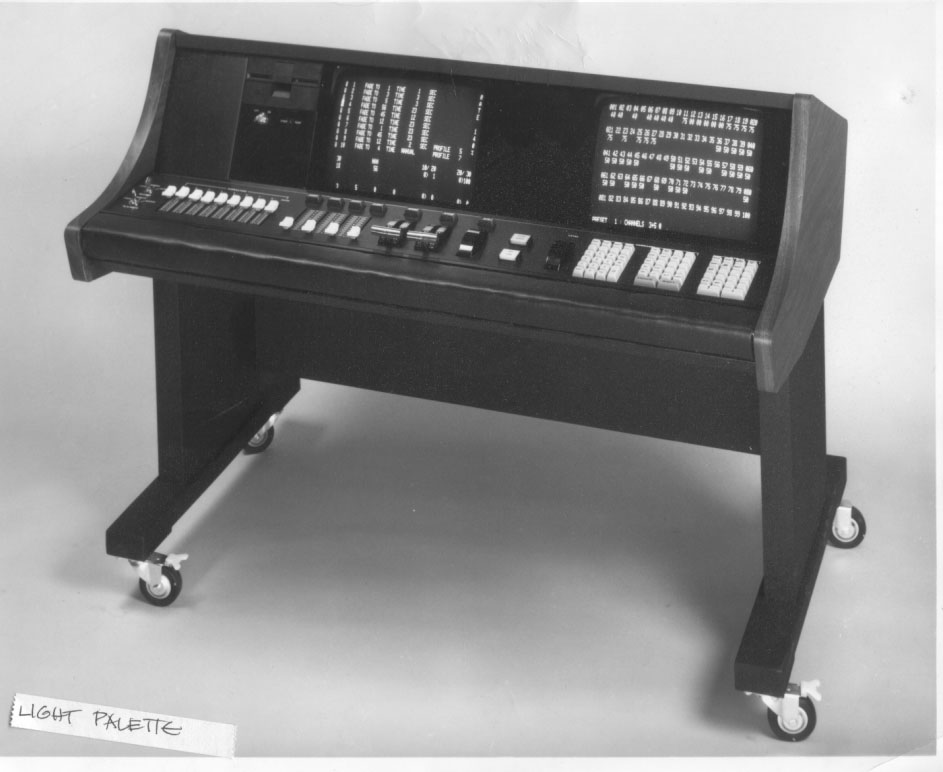
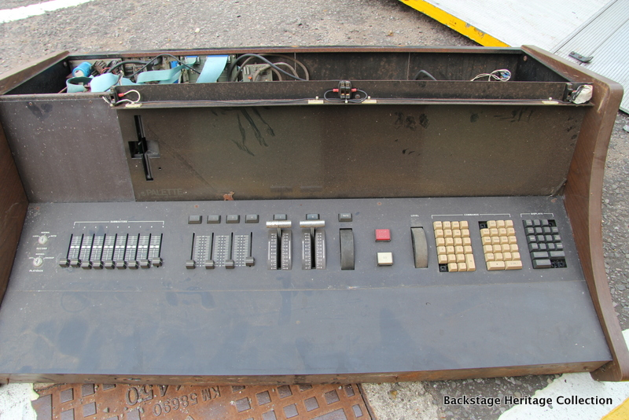
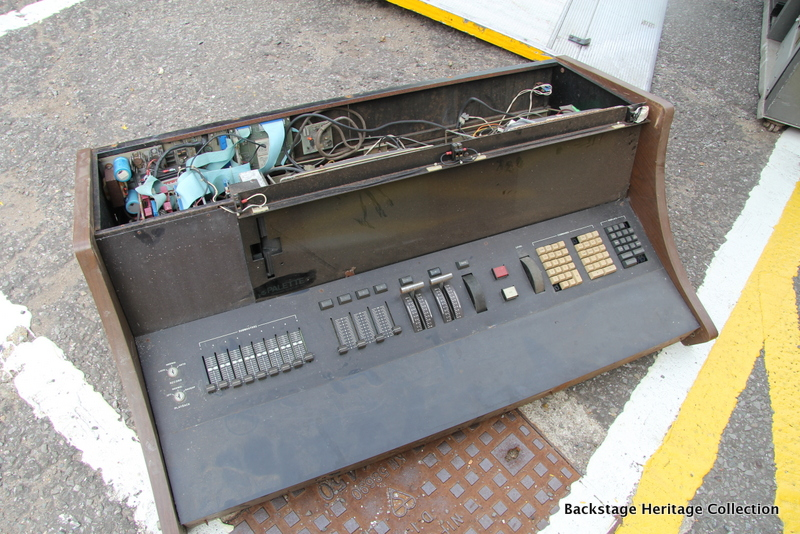

Strand Light Palette
The lighting designer's command line — type sentences like 'CH 1 @ 5', and the theatre obeys

Overview
The Strand Century Light Palette, introduced in 1978, was the first lighting control console to make a CRT readout and command-line input the working tools of the commercial theatre. Designed by David Cunningham at Strand Century (the US arm of Rank Strand), it was a microprocessor-based memory system controlling 512 dimmers on 256 control channels, with electronic dimmer-to-channel patching, eight submasters, and up to 200 stored cues. Strand's own 1987 retrospective, 'The Three Hundredth Milestone,' describes it as implementing 'a Command Line control technique in which most instructions were entered digitally in a sentence format' and says the console 'launched an entire philosophy of control — a philosophy which is now the US industry standard.' The Light Palette's design was based on the familiar two-scene-preset 'piano board' approach to lighting control, translated into computer memory.
A lighting designer worked with the Palette by typing instructions on a dedicated keypad — channel numbers, levels, and timings in sentence format — watching the cue sheet and levels on the console's CRT, and pressing GO to execute. Cues could contain up to six simultaneously active parts, each with its own fade time, split up/down times, delay, and fade profile. Features like 'group' recording, electronic (soft) patching, and computerized cue sheets were considered revolutionary at the time. Strand's slogan for the machine was 'Painting with Light.'
The first Light Palette was installed at the Goodspeed Opera House in East Haddam, Connecticut; its Broadway premiere came during the 1977–78 season, first used on Beatlemania (lit by Jules Fisher). By 1987, nine years after launch, 300 Light Palette family systems had been sold; the Light Palette 90 alone sold over 700 units. The family grew to include the MiniPalette (1980), Mini Light Palette (1982), Light Palette II (1984), LP/3 (1987), and Light Palette 90 (1989). LP/3 let the operator choose tracking vs. cue-only recording and the number of playback faders versus submasters — the interaction personality itself became software. The Light Palette I was discontinued in April 1988 after a decade. Its command-line philosophy is the direct ancestor of the ETC Eos command line still used on professional lighting desks today.
Deep dive
Lighting designers are not programmers, yet the Palette asked them to type channel/level sentences on a dedicated keypad and read the state of the show on a CRT. This was the first time a theatre console presented its state on a screen ('the first use of VDUs in lighting control,' per Theatrecrafts) rather than on physical faders. The interaction was deliberately built on the piano-board model designers already knew — the computer was a means to artistic control, not a replacement for the human element.
A cue on the Palette could contain up to six simultaneous parts, each with independent fade time, split up/down times, delay, and fade profile. Group recording, electronic patching, and computerized cue sheets let a designer build a show as structured data. LP/3 (1987) went further: the operator selected tracking versus cue-only recording, and the number of playback faders versus submasters — the console's interaction personality became a user-selectable software mode.
Designers specifically requested Mini Light Palettes on rental jobs because they wanted a tracking console that shared syntax with the big Palette — they carried the command language in their heads between venues, like a natural language. This is the strongest possible evidence that the interface was genuinely a language, not just a panel layout.
The Palette descended from Strand's earlier Multi-Q (1976) and Micro-Q (1977) memory consoles and was competed against by Gordon Pearlman's EDI LS-8 (1975, used on A Chorus Line) and Kliegl Performance (1977). Its command-line + tracking paradigm became the US industry standard and survives in every modern ETC Eos desk. The Light Palette name was revived by Strand on modern hardware in 2006.
Team & pioneers
- David Cunningham. Designer of the Light Palette at Strand Century; earlier Multi-Q (1976) and Micro-Q (1977); later designed the ETC Source Four fixture. Awarded the 2015 Parnelli Visionary Award.
- Strand Century, Inc. Manufacturer; the US arm of Rank Strand (a Rank Organisation company), based in New York.
- Anne Morris. Strand Lighting control product manager; author of the 1987 retrospective 'The Three Hundredth Milestone.'
Media


Sources
- Theatrecrafts BHC — Light Palette equipment page (includes Strand's 1987 'The Three Hundredth Milestone')
- The Strand Archive — Light Palette catalogue page
- Theatrecrafts BHC — David Cunningham biography
- ControlBooth — Memory Lighting Control Systems, History (industry timeline)
- Theatrecrafts BHC — Kliegl Performer page (Gordon Pearlman's first-person account, competitive context)
- Theatrecrafts BHC — Skirpan Autocue (1973), predecessor context